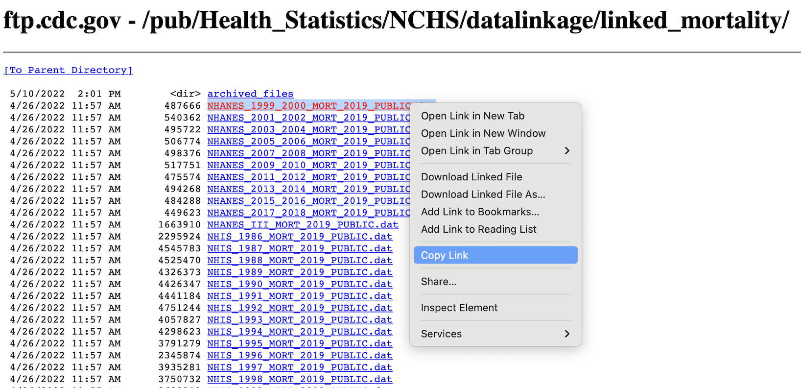

5 Mortality and NHANES Merging
This section continues the data preparation process. In the previous part, we created 10 cleaned datasets, one for each NHANES cycle from 1999 to 2018. Now, we will combine those 10 datasets into a single data frame and then link it with the all-cause mortality follow-up data from the National Death Index (NDI).
5.1 Combining the NHANES Survey Cycles
- R Code Chunk 1: Load Processed NHANES Data
The following code begins by loading the 10 processed .RData files that were created and saved in the previous section. Each file contains the cleaned demographic and smoking variables for participants aged 20 years and older for a specific survey cycle. The ls() command is used to list the objects now loaded in our R environment.
Show/Hide Code
load(file="data/analytic00.RData")
load(file="data/analytic01.RData")
load(file="data/analytic03.RData")
load(file="data/analytic05.RData")
load(file="data/analytic07.RData")
load(file="data/analytic09.RData")
load(file="data/analytic11.RData")
load(file="data/analytic13.RData")
load(file="data/analytic15.RData")
load(file="data/analytic17.RData")
ls()
#> [1] "analytic00" "analytic01" "analytic03" "analytic05"
#> [5] "analytic07" "analytic09" "analytic11" "analytic13"
#> [9] "analytic15" "analytic17" "has_annotations" "nhanes00"
#> [13] "nhanes01" "nhanes03" "nhanes05" "nhanes07"
#> [17] "nhanes09" "nhanes11" "nhanes13" "nhanes15"
#> [21] "nhanes17"- R Code Chunk 2: Combine NHANES Cycles and Adjust Weights
Now that the 10 separate NHANES datasets are loaded into the environment, we need to combine them into one single data frame and adjust the survey weights for the pooled data.
1. Combine Datasets
The following code combines the 10 individual analytic data frames into a single, large data frame named dat.full. The rbind() function is used to stack the data frames by row. After this step, we run several checks to confirm that all 10 survey cycles are present and to see the final dimensions of the combined dataset. There are now 101316 rows in the single dataframe.
Show/Hide Code
# Full dataset : 1999-2018
dat.full <- rbind(nhanes00, nhanes01, nhanes03, nhanes05,
nhanes07, nhanes09, nhanes11,
nhanes13, nhanes15, nhanes17)
unique(dat.full$year)
#> [1] NHANES 1999-2000 Public Release NHANES 2001-2002 Public Release
#> [3] NHANES 2003-2004 Public Release NHANES 2005-2006 Public Release
#> [5] NHANES 2007-2008 Public Release NHANES 2009-2010 Public Release
#> [7] NHANES 2011-2012 public release NHANES 2013-2014 public release
#> [9] NHANES 2015-2016 public release NHANES 2017-2018 public release
#> 10 Levels: NHANES 1999-2000 Public Release ... NHANES 2017-2018 public release
length(unique(dat.full$year))
#> [1] 10
dim(dat.full)
#> [1] 101316 122. Adjust Survey Weights
Next, the following code adjusts the survey weights. When combining multiple NHANES cycles, the original two-year survey weights must be redistributed. We create a new weight variable, survey.weight.new, by dividing the original weight by the number of survey cycles (10). The original weight column is then removed.
Show/Hide Code
# Corrected Weights
dat.full$survey.weight.new <- dat.full$survey.weight /
length(unique(dat.full$year))
# Remove original variable
dat.full$survey.weight <- NULL
# Print Columns
names(dat.full)
#> [1] "id" "age" "sex"
#> [4] "race" "born" "smoking.age"
#> [7] "smoked.while.child" "smoking" "psu"
#> [10] "strata" "year" "survey.weight.new"5.2 Acquiring the Linked Mortality Data
- R Code Chunk 3: Download and Read Mortality Data
This section covers downloading the public-use mortality data linked to the NHANES participants.
1. Create Data Directories
Before downloading the data, we first ensure the necessary subdirectories (data/ and data/Mortalitydata/) exist in our project folder for our computer’s workspace. The following code checks for these directories and creates them if they are missing, which prevents errors when saving files.
2. Read Fixed-Width Format Files
The public-use mortality data is provided by NCHS in a fixed-width text file format (.dat). In this format, each variable occupies a specific character position on each line. We need to read the file for each NHANES cycle and extract the necessary columns.

To read this type of file, we use the readr::read_fwf() function. We must provide fwf_cols() with the exact start and end positions for each variable we want to extract, based on the official NCHS documentation.
The following code demonstrates this process for the 1999-2000 mortality file, reading it directly from the CDC’s server by copying the link (shown in image). For this tutorial, this same process was repeated for all 10 survey cycles.
5.2.1 Mortality data 1999-2000
Show/Hide Code
mort2000 <- read_fwf(file = "https://ftp.cdc.gov/pub/Health_Statistics/NCHS/datalinkage/linked_mortality/NHANES_1999_2000_MORT_2019_PUBLIC.dat",
col_types = "iiiiiiii",
fwf_cols(id = c(1,6),
mort_eligstat = c(15,15),
mort_stat = c(16,16),
mort_ucod_leading = c(17,19),
mort_diabetes = c(20,20),
mort_hyperten = c(21,21),
mort_permth_int = c(43,45),
mort_permth_exm = c(46,48)),
na = c("", "."))
colnames(mort2000)
#> [1] "id" "mort_eligstat" "mort_stat"
#> [4] "mort_ucod_leading" "mort_diabetes" "mort_hyperten"
#> [7] "mort_permth_int" "mort_permth_exm"
head(mort2000)5.2.2 Mortality data 2001-2002
Show/Hide Code
mort2001 <- read_fwf(file = "https://ftp.cdc.gov/pub/Health_Statistics/NCHS/datalinkage/linked_mortality/NHANES_2001_2002_MORT_2019_PUBLIC.dat",
col_types = "iiiiiiii",
fwf_cols(id = c(1,6),
mort_eligstat = c(15,15),
mort_stat = c(16,16),
mort_ucod_leading = c(17,19),
mort_diabetes = c(20,20),
mort_hyperten = c(21,21),
mort_permth_int = c(43,45),
mort_permth_exm = c(46,48)),
na = c("", "."))
#colnames(mort2001)
#head(mort2001)5.2.3 Mortality data 2003-2004
Show/Hide Code
mort2003 <- read_fwf(file = "https://ftp.cdc.gov/pub/Health_Statistics/NCHS/datalinkage/linked_mortality/NHANES_2003_2004_MORT_2019_PUBLIC.dat",
col_types = "iiiiiiii",
fwf_cols(id = c(1,6),
mort_eligstat = c(15,15),
mort_stat = c(16,16),
mort_ucod_leading = c(17,19),
mort_diabetes = c(20,20),
mort_hyperten = c(21,21),
mort_permth_int = c(43,45),
mort_permth_exm = c(46,48)),
na = c("", "."))
#colnames(mort2003)
#head(mort2003)5.2.4 Mortality data 2005-2006
Show/Hide Code
mort2005 <- read_fwf(file = "https://ftp.cdc.gov/pub/Health_Statistics/NCHS/datalinkage/linked_mortality/NHANES_2005_2006_MORT_2019_PUBLIC.dat",
col_types = "iiiiiiii",
fwf_cols(id = c(1,6),
mort_eligstat = c(15,15),
mort_stat = c(16,16),
mort_ucod_leading = c(17,19),
mort_diabetes = c(20,20),
mort_hyperten = c(21,21),
mort_permth_int = c(43,45),
mort_permth_exm = c(46,48)),
na = c("", "."))
#colnames(mort2005)
#head(mort2005)5.2.5 Mortality data 2007-2008
Show/Hide Code
mort2007 <- read_fwf(file = "https://ftp.cdc.gov/pub/Health_Statistics/NCHS/datalinkage/linked_mortality/NHANES_2007_2008_MORT_2019_PUBLIC.dat",
col_types = "iiiiiiii",
fwf_cols(id = c(1,6),
mort_eligstat = c(15,15),
mort_stat = c(16,16),
mort_ucod_leading = c(17,19),
mort_diabetes = c(20,20),
mort_hyperten = c(21,21),
mort_permth_int = c(43,45),
mort_permth_exm = c(46,48)),
na = c("", "."))
#colnames(mort2007)
#head(mort2007)5.2.6 Mortality data 2009-2010
Show/Hide Code
mort2009 <- read_fwf(file = "https://ftp.cdc.gov/pub/Health_Statistics/NCHS/datalinkage/linked_mortality/NHANES_2009_2010_MORT_2019_PUBLIC.dat",
col_types = "iiiiiiii",
fwf_cols(id = c(1,6),
mort_eligstat = c(15,15),
mort_stat = c(16,16),
mort_ucod_leading = c(17,19),
mort_diabetes = c(20,20),
mort_hyperten = c(21,21),
mort_permth_int = c(43,45),
mort_permth_exm = c(46,48)),
na = c("", "."))
#colnames(mort2009)
#head(mort2009)5.2.7 Mortality data 2011-2012
Show/Hide Code
mort2011 <- read_fwf(file = "https://ftp.cdc.gov/pub/Health_Statistics/NCHS/datalinkage/linked_mortality/NHANES_2011_2012_MORT_2019_PUBLIC.dat",
col_types = "iiiiiiii",
fwf_cols(id = c(1,6),
mort_eligstat = c(15,15),
mort_stat = c(16,16),
mort_ucod_leading = c(17,19),
mort_diabetes = c(20,20),
mort_hyperten = c(21,21),
mort_permth_int = c(43,45),
mort_permth_exm = c(46,48)),
na = c("", "."))
#colnames(mort2011)
#head(mort2011)5.2.8 Mortality data 2013-2014
Show/Hide Code
mort2013 <- read_fwf(file = "https://ftp.cdc.gov/pub/Health_Statistics/NCHS/datalinkage/linked_mortality/NHANES_2013_2014_MORT_2019_PUBLIC.dat",
col_types = "iiiiiiii",
fwf_cols(id = c(1,6),
mort_eligstat = c(15,15),
mort_stat = c(16,16),
mort_ucod_leading = c(17,19),
mort_diabetes = c(20,20),
mort_hyperten = c(21,21),
mort_permth_int = c(43,45),
mort_permth_exm = c(46,48)),
na = c("", "."))
#colnames(mort2013)
#head(mort2013)5.2.9 Mortality data 2015-2016
Show/Hide Code
mort2015 <- read_fwf(file = "https://ftp.cdc.gov/pub/Health_Statistics/NCHS/datalinkage/linked_mortality/NHANES_2015_2016_MORT_2019_PUBLIC.dat",
col_types = "iiiiiiii",
fwf_cols(id = c(1,6),
mort_eligstat = c(15,15),
mort_stat = c(16,16),
mort_ucod_leading = c(17,19),
mort_diabetes = c(20,20),
mort_hyperten = c(21,21),
mort_permth_int = c(43,45),
mort_permth_exm = c(46,48)),
na = c("", "."))
#colnames(mort2015)
#head(mort2015)5.2.10 Mortality data 2017-2018
Show/Hide Code
mort2017 <- read_fwf(file = "https://ftp.cdc.gov/pub/Health_Statistics/NCHS/datalinkage/linked_mortality/NHANES_2017_2018_MORT_2019_PUBLIC.dat",
col_types = "iiiiiiii",
fwf_cols(id = c(1,6),
mort_eligstat = c(15,15),
mort_stat = c(16,16),
mort_ucod_leading = c(17,19),
mort_diabetes = c(20,20),
mort_hyperten = c(21,21),
mort_permth_int = c(43,45),
mort_permth_exm = c(46,48)),
na = c("", "."))
#colnames(mort2017)
#head(mort2017)After downloading, each of the 10 mortality data frames is saved as an .RData file.
Show/Hide Code
saveRDS(mort2000, file = "data/Mortalitydata/mort2000.RData")
saveRDS(mort2001, file = "data/Mortalitydata/mort2001.RData")
saveRDS(mort2003, file = "data/Mortalitydata/mort2003.RData")
saveRDS(mort2005, file = "data/Mortalitydata/mort2005.RData")
saveRDS(mort2007, file = "data/Mortalitydata/mort2007.RData")
saveRDS(mort2009, file = "data/Mortalitydata/mort2009.RData")
saveRDS(mort2011, file = "data/Mortalitydata/mort2011.RData")
saveRDS(mort2013, file = "data/Mortalitydata/mort2013.RData")
saveRDS(mort2015, file = "data/Mortalitydata/mort2015.RData")
saveRDS(mort2017, file = "data/Mortalitydata/mort2017.RData")5.3 Merging NHANES with Mortality Data
- R Code Chunk 4: Combine Mortality Datasets
The following code combines the 10 individual mortality data frames into a single, large data frame named dat.mortality. The rbind() function is used to combine the data frames vertically by stacking rows. The dim() and head() functions are then used to confirm the dimensions and inspect the first few rows of the combined dataset. There are 101,316 rows in the dataset.
Examine Mortality Eligibility Status:
After combining the datasets, it’s important to examine the mort_eligstat variable. This variable indicates the eligibility status of each participant for the mortality follow-up study. The codes are defined as follows:
1: Eligible for mortality follow-up.
2: Under age 18 and not available for public release.
3: Ineligible for other reasons.
NA: Missing eligibility status.
The table() function is used to see the distribution of participants across these categories.
- R Code Chunk 5: Final Merge of NHANES and Mortality Data
The following code performs the final merge, joining the combined NHANES dataset (dat.full) with the combined mortality dataset (dat.mortality). The two datasets are linked using the unique participant identifier, id. By setting the argument all.x = TRUE, all participants from the combined NHANES dataset are kept, regardless of whether they have a matching record in the combined mortality dataset.
- R Code Chunk 6: Save Final Dataset
Finally, the complete, merged dataset is saved as an RDS file. This file, dat.full.with.mortality.RDS, will be the starting point for the statistical analysis in the next chapter.
This concludes the second part of the data preparation stage.
5.4 Chapter Summary and Next Steps
This chapter concluded the data preparation phase. We first combined the 10 individual NHANES survey cycles into a single, comprehensive dataset and adjusted the survey weights for the pooled 20-year period.
Subsequently, we acquired the public-use mortality follow-up data and merged it with the NHANES data by participant ID. The final output of this chapter is a single, complete dataset that links baseline survey data to long-term mortality outcomes, forming the foundation for all statistical analyses in the chapters that follow.